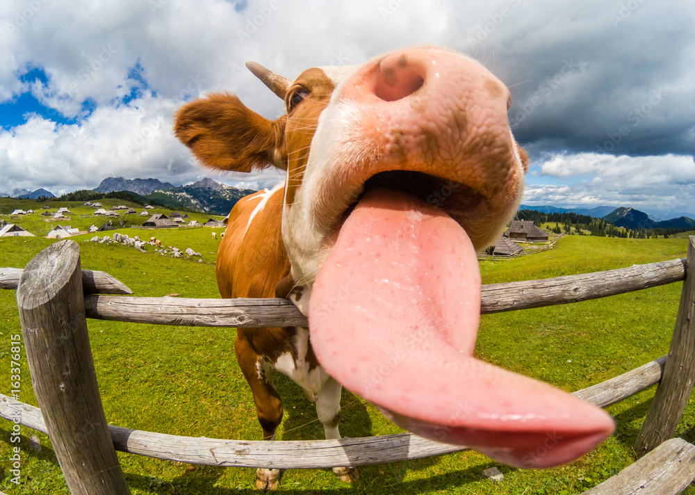

From Our Family Farm To Your Plate
We strive to bring you food made with the freshest, highest quality ingredients… So we decided to do it ourselves! All ingredients are grown and farmed locally, on our farm just outside of Charlotte before being prepared (with love) by our expertly trained staff for your enjoyment.
Every menu item is vegetarian and certified cruelty-free, because we know the tastiest food comes from the most ethical and sustainable practices. Stop by and enjoy a cup o’ Joe with us, cheers!